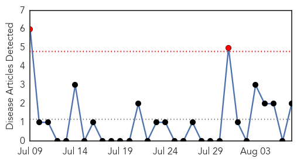
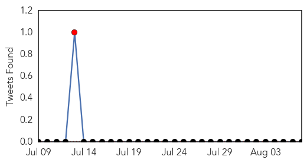
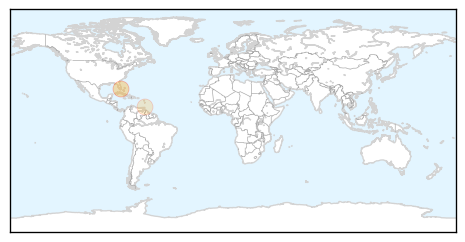
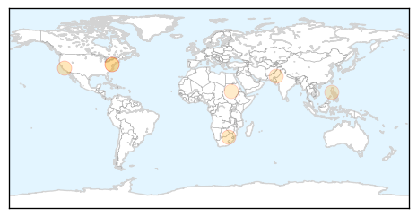

Chikungunya
30-Day Web Trend
2 alerts, 0 warnings

30-Day Twitter Trend
1 alerts, 0 warnings

Article Locations
Article Confidences

Top Articles:
Top Tweets:
-
No tweets found for Aug 07, 2015
Measles
30-Day Web Trend
0 alerts, 0 warnings
30-Day Twitter Trend
0 alerts, 0 warnings

Article Locations
Article Confidences
Top Articles:
- 0.805
- Baltimore County Investigates Possible Measles Case « CBS DC
- 0.801
- March of Dimes reminds parents vaccines are crucial for preventing disease outbreaks
- 0.729
- Are vaccines a shot in the dark?
- 0.649
- Funds released for flood-hit districts
- 0.637
- DOH says side effects of immunization normal
- 0.613
- Sudan Vision Daily
- 0.563
- Baltimore health officials investigating possible measles case
Top Tweets:
-
No tweets found for Aug 07, 2015